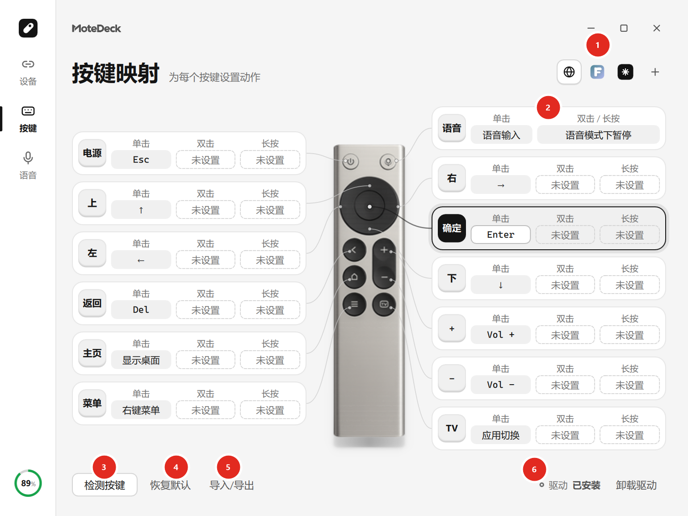

按键映射¶
打开「按键」页，直接在遥控器实物图上点选按键，再给它的单击、双击、长按各设一个动作，点「完成」即自动保存。

图中标号：① 应用条（按应用配置） ② 按键卡（单击／双击／长按） ③ 检测按键 ④ 恢复默认 ⑤ 导入／导出 ⑥ 驱动状态
三种手势¶
| 手势 | 触发条件 | 说明 |
|---|---|---|
| 单击 | 按下后立即触发 | 最常用的映射 |
| 双击 | 快速连按两次 | 与单击互不冲突，不影响单击动作 |
| 长按 | 按住约 0.55 秒 | 只触发一次；松手后不会补发单击 |
同一个按键的三种手势可以各配一个动作，也可以只配其中一两种。
长按与连击
- 普通动作里，方向、退格、音量这类允许连续执行的按键在持续按住时会重复（
SendInput注入会重放完整的按下 + 抬起，驱动级注入只保持按下）。 - 绑定了「米家设备」动作的按键，如果没有另设长按或双击动作，按住不放会以 0.2 秒一次的节奏重复执行同一个动作（例如按住「亮度+」台灯会一路变亮），松手立刻停。
- 已经另外配了长按或双击动作的按键，行为不变。
可设置的动作¶
- 方向键 / 功能键：上、下、左、右、确认、返回、ESC 等。
- 快捷键：任意组合键，例如
Ctrl+C、Alt+Tab。 - 鼠标操作：移动、单击、右键、滚轮，以及鼠标左键／右键／X1／X2 的「长按」。
- 打开应用：直接启动某个程序或打开某个文件。
- Quicker 动作：通过 Quicker 的动作链接执行。
- 米家设备：连接 OpenMexia 之后才会出现，条目形如「客厅灯 · 开灯」。
鼠标长按只出现在「长按」栏：按住约 0.55 秒后保持鼠标按下，遥控器松手即释放，适合拖动。 断线、停服务、切换设备或退出时，程序会统一清理未释放的按键。
注入方式¶
每个按键可以单独选择注入后端：
| 后端 | 特点 |
|---|---|
SendInput（默认） |
兼容性最好，系统原生接口；长按需要程序自己补发重复 |
| Interception（驱动级） | 走键盘驱动层，长按与组合键更接近真实键盘手感；需要安装驱动 |
驱动级注入第一次启用时会走 build/fetch-interception.ps1 之外的常规安装流程。
内存完整性会被拒绝
Windows 11 的「内存完整性（HVCI）」开启时，Interception 驱动无法正常加载，程序会直接拒绝安装并提示。 需要时先关闭内存完整性再安装；卸载驱动永远不会被拦，可作为回退手段。
按应用配置¶
按键页顶部有一条应用条（第一项固定是「全局」，末尾的「+」用于新增应用）：
- 点击某一项，下方按键列表立即切到该档案，没有额外的「应用配置」步骤。
- 在某一档案里的编辑会自动保存，保存后下一轮检测即生效，不必切走再切回。
- 应用条上的条目可以按住左右拖动排序，松手即保存新位置。
- 档案只保存被覆盖的按键，未覆盖的按键回落到「全局」映射。
- 运行时按前台进程名（不区分大小写、精确匹配）自动切换；也可以给档案设一个切换快捷键。
- 当前生效的档案在应用条上带勾显示。
连接 OpenMexia 后会多出一个带黑色图标的条目，它跟着插件走，不能删除或重命名。
管理档案¶
- 复制 / 重命名：遇到同名会提示换名。
- 删除：需要确认，只删该档案，全局按键与其它档案不受影响；当前生效的档案被删后，生效标记回到「全局」。
- 导出 / 导入：点「恢复内置默认」旁的「整体配置」，可以把全局按键和全部应用档案打包成一个文件，便于整机迁移。
- 导入会替换全局按键与全部应用档案并立即更新按键设置；遇到重名自动加序号，不覆盖已有档案。
档案只包含当前型号的按键动作和备注，不含设备身份、配对信息、语音与音频设置，因此同型号设备之间可以共用。
旧动作需要调整时
当前映射里含需要调整的旧动作时，仍可查看应用条、管理已有档案、导入有效配置； 但复制和导出前需要先在按键页完成调整并保存。
配置存在哪里¶
| 文件 | 内容 |
|---|---|
key_bindings.json |
全局按键映射 |
app_profiles.json |
按应用的覆盖项（版本 4） |
默认都在 %LOCALAPPDATA%\RemoteMic\RC003。旧的 mapping_presets.json（版本 1–3）在首次读取时自动迁移，
原文件保留作备份。未知版本或损坏文件会明确报错并保留原文件，不会覆盖。
语音键也能放到按键上¶
「语音1／语音2」可以绑到任意按键，按下时会执行该槽录制的快捷键并请求开麦。 但 RC003 只在实体话筒键被按住期间送出声音，所以真正能传声的用法仍然是按住话筒键说话， 详见语音输入。